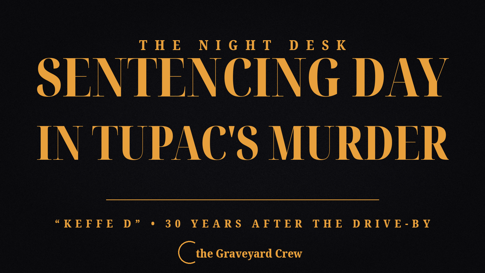

October 13, 2026
The man convicted of orchestrating Tupac Shakur's murder faces sentencing today — 30 years after the Las Vegas drive-by


Courthouse photo: Wikimedia Commons; card: The Night Desk
The man convicted of orchestrating Tupac Shakur's murder faces sentencing today — 30 years after the Las Vegas drive-by
Thirty years after the shots that killed one of rap's biggest stars, the only person ever charged in the death of Tupac Shakur learns his sentence today.
Duane "Keffe D" Davis, 63, is set to appear before District Judge Carli Kierny in a Las Vegas courtroom on Tuesday, October 13, where he faces a maximum of life in prison without the possibility of parole. He was convicted in August of first-degree murder with the use of a deadly weapon.
The crime that haunted hip-hop for three decades
On the night of September 7, 1996, Shakur — 25 years old and at the peak of his popularity — was riding in the passenger seat of a black BMW driven by Death Row Records co-founder Marion "Suge" Knight when a white Cadillac pulled up beside them at a red light off the Las Vegas Strip. Shots erupted. Shakur was hit multiple times and died six days later. Knight survived.
The killing became one of America's most notorious cold cases. It went unsolved for years, spawning decades of conspiracy theories and cementing the East Coast–West Coast "gangsta" rap feud of the 1990s in pop-culture legend.
Brought down by his own words
Investigators had almost nothing until Davis started talking. A former leader of the South Side Compton Crips, Davis described his role in the killing in a protected 2008 interview with detectives, on a 2018 BET docuseries, and in his 2019 tell-all memoir, Compton Street Legend. He said he was sitting in the Cadillac's passenger seat that night and passed the gun to the back seat, where the shots were fired.
Prosecutors said the motive was swift retaliation: hours earlier, Shakur and members of his entourage had beaten Davis's nephew, Orlando Anderson, inside the MGM Grand casino, where members of both groups — the South Side Compton Crips and Mob Piru, associated with Shakur, Knight and Death Row Records — had gathered for a heavyweight boxing match that night.
Under Nevada law, prosecutors did not have to prove Davis pulled the trigger to convict him of murder — and despite the conviction, who fired the fatal shots has never been conclusively decided.
Davis was arrested on September 29, 2023, and has been held without bail. He has said he plans to appeal the conviction.
Why this matters
For nearly 30 years, the question of who killed Tupac Shakur was the most famous unsolved mystery in American music. Today's sentencing closes the first — and so far only — prosecution it ever produced.
Source: Reuters, reporting from Las Vegas.
Source: Reuters — read the original report
← Back to latest stories